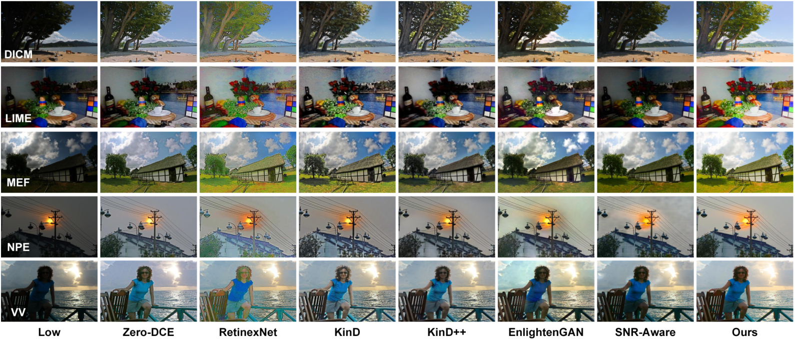

Abstract
The differential equation-based image restoration approach generally aims to establish learnable trajectories/paths connecting high-quality images to a tractable distribution, e.g., low-quality images or a Gaussian distribution. In this paper, we reformulate the optimization of the differential equation trajectories as two steps toward effective and efficient image restoration. Initially, we navigate effective restoration paths through a reinforcement learning process, gradually steering potential trajectories towards the most precise options. Additionally, to mitigate the considerable computational burden associated with iterative sampling, we employ trajectory distillation to streamline complex paths into several manageable steps with adaptable sizes. Extensive experiments showcase the superiority of the proposed method, which boosts $ $db on the tasks of de-raining, under-water, and low-light enhancement. Moreover, we also experimentally validated the effectiveness of the proposed method in a general reconstruction image restoration framework with 12B diffusion model FLUX-DEV. The source code is publicly available at \url{https://github.com/ZHU-Zhiyu/FLUX-IR}.
Method

Illustration of the training workflow of the proposed method.
Results

Quantitative results on LOLv1 and LOLv2.

Visual results on LOLv1 and LOLv2.
Visual results on unpaired real low-light images.